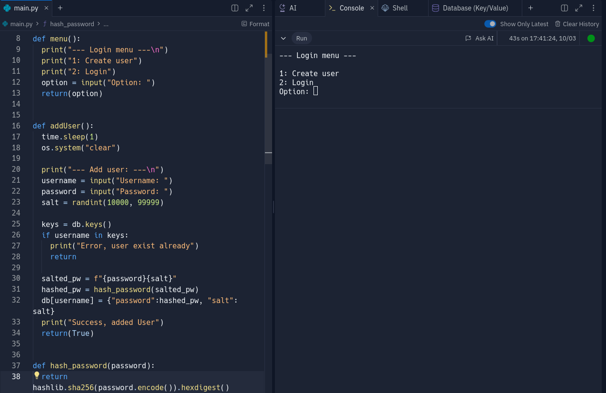
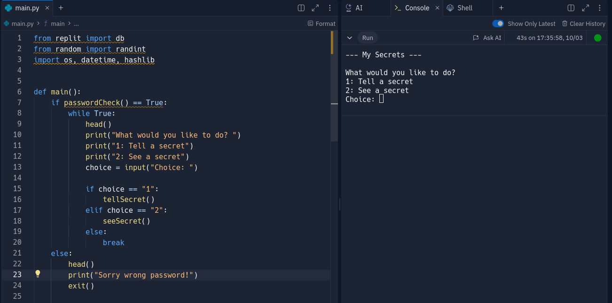

A login system that makes it possible to either create a user or log in. The user is stored in the replit-db and the password is salted and hashed.
The secret keeper use replit db to handle login and storing of secrets.
At first run you'll have to set a password and on any subsequent logins the password has to be validated before seeing the secrets.
As a project to create a simple graphical interface with tkinter I made this calculator.
Test my simple calculatorA simple todo-list wich stores to a file and backs up said file in case of errors.
See the to-do-list on GithubThe birdapp is a simple text-interface version of the blue bird-app that has been renamed
See the Bird-app on Github